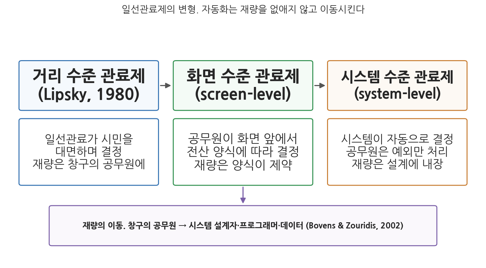
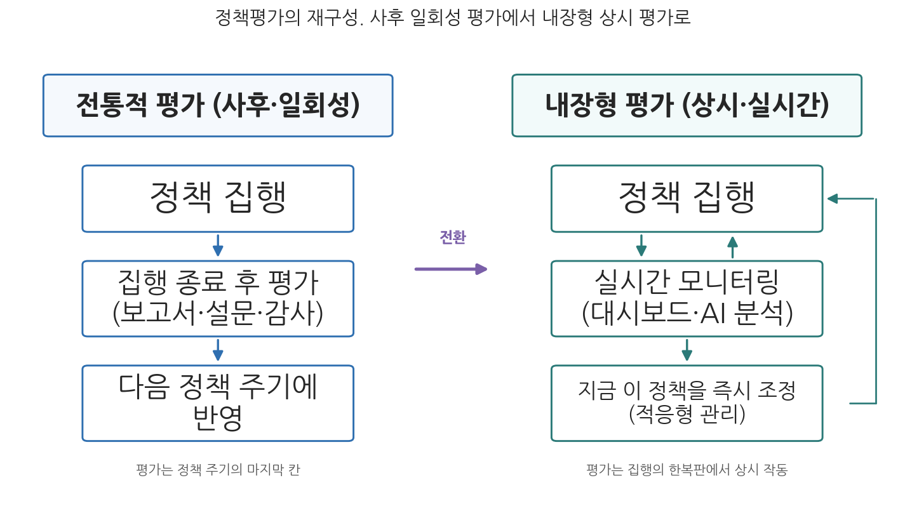

9주차 2차시. AI와 정책과정 (2): 집행과 평가
일선관료들이 내리는 결정, 그들이 확립하는 일상적 절차, 그리고 불확실성과 업무 압박에 대처하려고 고안해 내는 장치들이, 사실상 그들이 수행하는 공공정책 그 자체가 된다. (마이클 립스키, 『일선관료제(Street-Level Bureaucracy)』, 1980)
이 장에서 배우는 것
2021년 1월 15일, 네덜란드의 뤼터(Mark Rutte) 총리는 내각 총사퇴를 발표했다. 전쟁도 경제 위기도 아니었다. 정부를 무너뜨린 것은 세무 행정의 알고리즘이었다. 국세청이 아동보육수당 부정수급을 걸러 내겠다며 운용한 위험 분류 시스템은 이중국적 같은 요소를 위험 신호로 삼아 수만 명의 부모를 사기 혐의자로 지목했고, 담당 공무원들은 시스템의 판정을 뒤집지 않은 채 수년 치 수당을 일시 환수했다. 빚더미에 앉아 집과 직장을 잃은 가정이 속출했고, 일부 가정에서는 아이들이 위탁 시설로 보내졌다. 지목된 부모의 압도적 다수는 이민 배경을 가진 시민이었다. 의회 조사가 이 전모를 확인하자 내각은 책임을 지고 물러났다.
이 사건이 충격적인 이유는 어느 단계에서 일어났는가에 있다. 정책의 목표(부정수급 방지) 자체는 논쟁적이지 않았다. 문제는 그 목표가 일선에서 집행되는 방식, 곧 누구를 조사하고 누구의 급여를 끊을지를 결정하는 과정에 AI가 들어오면서 발생했다. 지난 차시에서 우리는 정책과정의 앞 단계인 의제설정과 정책형성을 보았다. 그 단계에서 AI는 주로 조언자였다. 그러나 집행 단계에서 AI는 개별 시민의 삶에 직접 손을 대는 집행자가 된다. 급여를 지급하고, 환수를 명령하고, 조사 대상을 고른다. 그리고 평가 단계에서 AI는 그 모든 결과를 다시 읽어 정책의 성패를 판정하는 심판의 자리에 다가선다. 이 장은 정책과정의 뒷부분에서 무슨 일이 일어나고 있는지를 배운다.
- 자동화된 행정처분과 급여 지급 등 정책집행에서의 AI 활용과 그 법적 기초
- 일선관료제 이론으로 본 재량의 이동: 거리 수준에서 화면 수준, 시스템 수준으로
- 실시간 모니터링, 비정형 데이터 분석, 반사실 추정 등 정책평가에서의 AI
- 증거기반 정책이 데이터 기반 행정 시대에 어떻게 재구성되는가
이 장은 하나의 질문을 따라 전개된다. "정책을 집행하고 평가하는 손이 사람에서 시스템으로 옮겨 갈 때, 재량과 책임과 증거는 어디로 가는가?"
2.1 집행 단계의 AI를 본다 (자동화된 처분, 급여 지급, 예측 순찰) → 2.2 일선관료제 이론으로 재량의 이동을 추적한다 (거리 → 화면 → 시스템) → 2.3 평가 단계의 AI를 본다 (실시간 대시보드, 반사실 추정, 내장형 평가) → 2.4 증거기반 정책의 이상이 AI 시대에 어떻게 재구성되는지 따진다.
2.1 정책집행에서의 AI: 자동화된 행정처분과 급여 지급
결정을 행동으로 옮기는 단계
정책집행은 의사결정이 실제 행동으로 이어지는 단계다. 서비스 제공, 규칙 시행, 프로그램 관리가 여기에 속한다. 정책학의 오랜 교훈은 집행이 결코 기계적 실행이 아니라는 것이다. 아무리 잘 설계된 정책도 일선의 손을 거치며 다시 만들어진다. 바로 그 "일선의 손"에 지금 AI가 들어오고 있다. AI는 효율성을 높이고 새로운 서비스 제공 방식을 가능하게 함으로써 집행 단계에서 큰 진전을 가져올 것으로 기대되는데, 주요 활용은 행정 절차와 의사결정의 자동화, 알고리즘 기반 법 집행, 공공서비스 제공과 시민 참여의 향상으로 나눌 수 있다.
첫째, 행정 절차와 의사결정의 자동화다. 급여 신청 심사나 자격 판정처럼 규칙이 명확하고 반복되는 업무를 시스템이 처리하면, 업무 속도가 빨라질 뿐 아니라 규칙이 사람에 따라 다르게 적용되는 문제도 줄어든다. 핀란드의 복지 급여 신청 처리 자동화가 그런 예이고, 부정수급 의심 사례를 걸러 내는 이상 탐지도 여기에 속한다. 로봇 프로세스 자동화(RPA)는 데이터 입력이나 기록 대조 같은 반복적인 후방 업무를 사람보다 빠르고 오류 없이 수행한다.
둘째, 법 집행과 규제 분야의 알고리즘 기반 의사결정이다. 미국과 영국의 여러 경찰은 예측 모형으로 범죄 발생 가능성이 높은 지역을 추정해 순찰 자원을 배분하는 예측 치안(predictive policing)을 운용해 왔고, 규제 기관은 어느 사업장이 규칙을 위반할 가능성이 높은지 예측해 작업장 안전 점검이나 식품 위생 검사의 대상을 고르는 데 AI를 쓴다. 집행 자원은 언제나 부족하므로, 위반 확률이 높은 곳에 자원을 집중하는 것은 효율의 논리로는 자연스러운 귀결이다. 다만 예측 치안은 5주차에서 본 편향 증폭의 대표 사례이기도 하다. 과거 단속 데이터로 학습한 모형은 과거에 많이 단속된 지역을 다시 지목하고, 그 지역에 순찰이 집중되면 적발이 늘어 데이터의 편향이 더 강해진다. 이런 비판 속에 로스앤젤레스 경찰은 2020년 예측 치안 프로그램을 중단했고, EU AI Act(인공지능법)는 개인의 범죄 가능성을 프로파일링으로 예측하는 시스템을 금지 목록에 올려 2025년 2월부터 시행하고 있다.
셋째, 공공서비스 제공과 참여의 향상이다. 챗봇과 가상 비서는 많은 정부에서 시민 안내를 담당한다. 포르투갈의 사법부 챗봇은 혼인, 이혼, 사업자 등록 절차를 안내하고, 미국 로스앤젤레스시의 챗봇은 세금과 인허가 정보를 찾아 준다. 스마트 인프라 관리도 있다. 미국 멤피스시는 AI 비전 시스템을 장착한 차량으로 도로 파손을 자동 탐지해 정비 시간과 비용을 절감했고, 두바이는 AI 기반 키오스크와 감시 시스템을 갖춘 무인 경찰서를 운영한다. 이런 활용은 생산성 향상, 부정수급 감소, 서비스 제공 개선, 정부-시민(G2C) 상호작용의 품질 향상을 가져다준다.
자동화된 행정처분: 법이 그은 선
집행 자동화가 개별 시민에 대한 처분(급여 지급 결정, 과태료 부과, 자격 취소)에 이르면, 이는 행정법의 문제가 된다. 한국은 이 문제에 비교적 일찍 법적 기초를 두었다. 2021년 제정된 행정기본법 제20조는 "행정청은 법률로 정하는 바에 따라 완전히 자동화된 시스템(인공지능 기술을 적용한 시스템을 포함한다)으로 처분을 할 수 있다. 다만, 처분에 재량이 있는 경우는 그러하지 아니하다"라고 규정한다. 자동적 처분의 문을 열되, 두 개의 잠금장치(법률의 근거, 재량 없는 기속행위일 것)를 단 것이다. 규칙을 대입하면 답이 하나로 정해지는 처분은 기계에 맡길 수 있지만, 사정을 헤아려 판단해야 하는 처분은 사람이 해야 한다는 선 긋기다.
이 선 긋기는 2026년 들어 더 촘촘해지고 있다. 2026년 1월 22일 시행된 AI기본법(인공지능 발전과 신뢰 기반 조성 등에 관한 기본법)과 그 시행령은 사람의 생명과 신체의 안전, 기본권에 중대한 영향을 미치는 AI를 고영향 인공지능으로 규정하는데, 범죄 수사, 채용, 대출 심사와 함께 공공서비스 제공에 쓰이는 AI가 여기에 포함되어 사업자에게 투명성과 안전성 확보 의무가 부과된다(과학기술정보통신부 발표 기준, 규제 적용은 준비 기간을 고려해 유예됨). EU에서도 AI Act가 공공 급여와 서비스의 수급 자격 평가에 쓰이는 AI를 고위험으로 분류했다. 다만 2026년 6월 EU 이사회와 의회는 규제 준비 부족을 이유로 고위험 AI 의무의 적용 시점을 당초 2026년 8월에서 2027년 12월로 늦추는 조정안(디지털 옴니버스)을 최종 승인했다(EU 이사회 보도자료, 2026년 6월). 자동화된 행정처분을 어떻게 규제할 것인가는 12주차에서 본격적으로 다룬다.
법의 선 긋기가 왜 필요한지는 실제 사건들이 보여 준다. 그 대표가 호주의 로보데트다.
호주 정부는 2016년부터 복지 급여 부정수급 환수를 자동화한 온라인 시스템, 이른바 로보데트(Robodebt)를 가동했다. 시스템은 국세청의 연 소득 자료를 2주 단위로 평균 내어(소득 평균화) 수급 당시 신고 소득과 기계적으로 대조했고, 차이가 나면 사람의 검토 없이 채무 통지서를 발송했다. 불규칙하게 일하는 저소득층의 소득은 연평균과 다를 수밖에 없으므로, 존재하지 않는 빚이 대량으로 만들어졌다. 입증 책임은 시민에게 전가되었고, 채무 통지를 받은 이들의 고통과 일부 극단적 선택이 사회 문제가 되었다. 2019년 연방법원이 소득 평균화 방식의 위법성을 인정했고, 2020년 집단소송에서 정부는 약 18억 호주달러 규모의 환급과 채무 취소에 합의했다. 2023년 7월 왕립조사위원회는 최종 보고서에서 이 제도를 "조잡하고 잔인한(crude and cruel)" 실패로 규정하고 관련자들을 사정기관에 회부했다. 후속 절차는 2026년까지 이어졌다. 국가반부패위원회(NACC)는 2024년 조사 거부 결정으로 비판을 받은 뒤 2025년 2월 재조사에 착수했고, 2026년 3월 공개한 조사 보고서에서 회부된 6명 중 전직 고위 공무원 2명의 "중대한 부패 행위"를 인정했다(NACC 발표, 2026년 3월).
이 사례가 보여 주는 것은 세 가지다. 첫째, 자동화의 오류는 대량으로, 그리고 일관되게 발생한다. 사람 심사관의 오류가 산발적이라면, 잘못 설계된 시스템의 오류는 같은 방식으로 수십만 번 반복된다. 자동화가 약속한 "일관성"이 거꾸로 "일관된 부정의"가 된 것이다. 둘째, 피해는 가장 취약한 집단에 집중되었다. 셋째, 책임 규명에 10년이 걸렸다. 시스템이 내린 결정의 책임이 누구에게 있는지를 가리는 일은 4주차에서 본 "많은 손"의 문제 그대로였고, 2026년의 반부패위원회 보고서에 이르러서야 개인의 책임이 일부 확정되었다.
2.2 일선관료제의 변화: 재량은 어디로 이동하는가
립스키의 일선관료
집행 단계의 AI가 행정학 이론에 던지는 가장 깊은 질문은 일선관료제의 운명이다.
일선관료(street-level bureaucrat)는 립스키(Lipsky, 1980)의 개념으로, 시민과 직접 대면하며 상당한 재량을 행사하는 현장의 공무원을 가리킨다. 사회복지 전담 공무원, 경찰관, 교사, 민원 창구 직원이 대표적이다. 이들은 부족한 자원과 모호한 규정, 과중한 업무 속에서 누구에게 시간을 쓰고 규정을 어떻게 적용할지 매일 판단하며, 그 판단의 총합이 시민이 실제로 경험하는 정책이 된다. 립스키가 "일선관료의 결정이 곧 공공정책이 된다"고 말한 이유다.
일선관료의 재량은 양날의 칼이다. 재량은 획일적 규정이 담지 못하는 개별 사정을 헤아리는 통로이지만, 동시에 자의와 차별, 부패가 스며드는 통로이기도 하다. 그래서 행정은 언제나 재량을 통제하려는 규칙과, 규칙이 놓치는 현실을 메우려는 재량 사이에서 진동해 왔다.
거리에서 화면으로, 화면에서 시스템으로
정보기술은 이 오래된 긴장의 지형을 바꾸었다. 보번스와 자우리디스(Bovens & Zouridis, 2002)는 대량의 반복적 결정을 다루는 집행 기관들이 두 단계의 변형을 겪는다고 분석했다. 먼저 화면 수준 관료제(screen-level bureaucracy)다. 공무원은 여전히 결정하지만, 시민을 대면하는 대신 화면 앞에 앉아 전산 양식이 요구하는 항목을 채우며 일한다. 어떤 질문을 할지, 어떤 정보를 고려할지는 이미 화면이 정해 놓았다. 다음은 시스템 수준 관료제(system-level bureaucracy)다. 학자금 지원이나 교통 범칙금처럼 정형화된 업무에서 결정은 사람의 손을 완전히 떠나 시스템이 자동으로 내린다. 네덜란드의 교통 범칙금 부과가 그들의 대표적 예였다. 이 단계에서 일선관료는 사라지고, 시민이 마주하는 것은 통지서와 콜센터뿐이다.

그림 9-3을 읽는 법은 이렇다. 세 개의 상자는 립스키의 거리 수준 관료제에서 보번스와 자우리디스의 화면 수준, 시스템 수준 관료제로 이어지는 변형을 나타내고, 각 상자 아래에는 그 단계에서 재량이 누구 손에 있는지가 적혀 있다. 맨 아래 화살표가 이 장의 핵심 논점이다. 이 그림에서 알 수 있는 것은 두 가지다. 첫째, 자동화는 재량을 소멸시키는 것이 아니라 이동시킨다. 창구 공무원의 재량이 사라진 자리에서, 무엇을 위험 신호로 삼을지, 어떤 기준으로 분류할지를 정하는 재량이 시스템 설계자, 프로그래머, 데이터 과학자, 그리고 알고리즘을 발주한 관리자의 손으로 옮겨 간다. 둘째, 재량의 행사 시점이 바뀐다. 일선관료의 재량이 개별 사건마다 행사되었다면, 설계자의 재량은 시스템을 만드는 시점에 한 번 행사되어 이후 수백만 건의 결정에 일괄 적용된다.
이 이동은 심각한 질문들을 낳는다. 시스템 설계자는 일선관료와 달리 시민의 얼굴을 보지 않는다. 개별 사정을 헤아리는 재량의 순기능은 사라지고, 설계에 스며든 판단(과 편견)은 대규모로 복제된다. 더구나 설계자의 재량은 코드 속에 있어 3주차에서 본 불투명성의 문제를 그대로 안는다. 일선관료의 자의적 처분에는 이의신청과 감사라는 통제 장치가 있었지만, 소프트웨어 사양서에 들어간 판단을 누가 심사하는가. 립스키의 이론이 "재량을 어떻게 통제할 것인가"를 물었다면, AI 시대의 일선관료제 이론은 "코드에 새겨진 재량을 어떻게 통제할 것인가"를 묻는다.
남아 있는 인간: 자동화 편향과 형식적 감독
시스템 수준으로의 이행이 완료되지 않은 영역에서는 사람과 시스템이 함께 일한다. 4주차에서 본 인간 개입(human-in-the-loop) 원칙은 바로 이 협업 지점에 최후의 안전판으로 사람을 세워 두려는 것이다. 그러나 사람이 자리에 앉아 있다는 것과 사람이 실질적으로 판단한다는 것은 다르다. 공무원들이 AI에 과도하게 의존하게 되면, 시스템이 의심스러운 결정을 내려도 그대로 신뢰하는 자동화 편향(automation bias)이 나타난다(Valle-Cruz et al., 2020). 하루 수백 건을 처리해야 하는 담당자에게 시스템의 판정을 뒤집는 일은 추가 업무와 책임 부담을 뜻하므로, 감독은 클릭 한 번의 형식적 승인으로 퇴화하기 쉽다. 네덜란드의 사건은 이 모든 요소가 결합했을 때 무슨 일이 일어나는지 보여 준 실물 교본이었다.
네덜란드 국세청은 아동보육수당 부정수급 적발에 자기학습 위험 분류 모형을 활용하면서 이중국적 등 출신 관련 요소를 위험 지표로 삼았고, 2005-2019년 사이 2만 6천에서 3만 5천 명에 이르는 부모가 사기 혐의자로 잘못 지목되어 수년 치 수당을 일시 환수당했다. 피해자의 다수는 이민 배경 가정이었고, 파산과 실직, 이혼이 뒤따랐으며 천 명이 넘는 아이들이 위탁 보호로 분리되었다. 2020년 12월 의회 조사위원회가 "전례 없는 불의"라고 결론 내리자 2021년 1월 뤼터 내각이 총사퇴했다. 정부는 피해 가정에 우선 3만 유로의 일괄 배상을 시작했으나, 정밀 심사를 요구하는 배상 절차의 복잡성 때문에 2025년 말 기준으로도 상당수 가정의 배상이 마무리되지 않았다(레이던대학교 분석, 2025년 12월). 한편 같은 시기 네덜란드 정부가 복지 부정 탐지에 쓰던 위험 프로파일링 시스템 SyRI는 2020년 2월 헤이그 지방법원에서 유럽인권협약상 사생활 보호 위반으로 위법 판결을 받아 폐지되었다. 두 사건은 2021년 국제앰네스티 보고서 「외국인혐오 기계(Xenophobic Machines)」와 2024년 의회 전면조사 보고서로 기록되어, EU AI Act가 공공 급여 분야 AI를 고위험으로 분류하는 직접적 배경이 되었다.
이 사례가 보여 주는 것은 시스템 수준 관료제의 실패가 어떤 모습인지다. 첫째, 차별이 설계에 내장되었다. 어느 창구 직원의 편견이 아니라 위험 모형의 변수 선택이 차별의 원천이었다(5주차의 논의 그대로다). 둘째, 화면 앞의 공무원들은 시스템의 판정에 맞서지 않았다. 자동화 편향과 실적 압박이 겹친 결과다. 셋째, 사후 구제가 처분의 자동화 속도를 따라가지 못했다. 환수는 알고리즘의 속도로 집행되었지만 배상은 관료제의 속도로 진행되어, 사건이 공식 확인된 지 5년이 지난 2026년까지도 끝나지 않았다. 자동화된 집행의 비대칭, 곧 "처분은 빠르고 구제는 느리다"는 이 교훈은 자동화된 행정처분 제도 설계의 출발점이 되어야 한다.
2.3 정책평가와 AI: 상시 평가의 시대
보고서에서 대시보드로
정책평가는 프로그램과 사업의 영향을 판정하는 정책 주기의 마지막 단계다. 전통적으로 평가는 정기 보고서, 설문조사, 감사, 통계분석에 의존했고, 그래서 평가는 언제나 사후적이었다. 정책이 집행되고 한참 뒤에, 그 사이 세상이 바뀐 다음에야 결과가 나왔다. AI는 실시간 모니터링, 빅데이터 분석, 정교한 결과 귀속을 가능하게 함으로써 이 시간표를 다시 쓰고 있다.
첫 번째 기여는 정책 산출에 대한 지속적 모니터링과 실시간 대시보드다. 우간다는 빅데이터 기반 실시간 대시보드로 HIV 예방 프로그램을 평가했는데(Thapa, 2019), 주요 지표의 진행 상황을 상시 추적하고 궤도 수정이 필요한 영역을 즉시 표시하는 이런 시스템은 평가를 집행이 끝난 뒤의 행사에서 집행 중에 계속 작동하는 내장형(embedded) 장치로 바꾼다.
두 번째 기여는 비정형 데이터의 활용이다. 평가자는 이제 텍스트, 영상, 센서 데이터처럼 예전에는 다룰 수 없던 방대한 자료를 증거로 쓸 수 있다. 정부는 소셜 미디어와 민원 창구에 올라온 수백만 건의 의견을 분석해 정책에 대한 체감 여론을 파악할 수 있다. 미국 재향군인부는 AI로 재향군인들의 서비스 품질 피드백을 종합해, 인간 분석가가 다 읽을 수 없는 텍스트 더미에서 개선이 필요한 지점을 추출한다. 숫자 지표만으로는 놓치던 질적 평가가 대규모로 가능해진 것이다.
세 번째 기여는 예측 분석을 이용한 반사실(counterfactual) 추정이다. 평가의 영원한 난제는 "정책이 없었다면 어떻게 되었을까"라는 질문이다. 기계학습은 정책이 시행되지 않았을 경우의 추세를 모형으로 추정해 비교 기준을 만들어 준다. 예컨대 어떤 도시가 AI 교통 관리 시스템을 도입했다면, 평가자는 기계학습으로 도입하지 않았을 때의 혼잡 추세를 추정하고 실제 관찰치와의 차이로 시스템의 효과를 정량화할 수 있다. AI는 다양한 교란 변수와 대규모 데이터를 처리할 수 있으므로 영향 평가의 엄밀성이 높아진다.
집행과 평가의 경계가 흐려진다
이 변화들이 합쳐지면 평가의 성격 자체가 바뀐다. AI는 평가의 빈도와 시의성을 높여, 평가를 일회성 사후 활동이 아닌 지속적 과정으로 만든다. 집행이 데이터 중심으로 전환되면서 집행과 평가의 경계 자체가 흐려지고 있으며(Höchtl et al., 2016), 정부는 성과 지표를 상시 모니터링하며 정책을 계속 손보는 적응형 관리(adaptive management)로 이동한다. 그림 9-4가 이 전환을 요약한다.

그림 9-4를 읽는 법은 이렇다. 왼쪽은 집행이 끝난 뒤 보고서와 설문으로 판정하는 전통적 평가의 흐름이고, 오른쪽은 집행과 나란히 돌아가는 실시간 대시보드가 계속 환류를 만들어 내는 내장형 평가의 흐름이다. 이 그림에서 알 수 있는 것은 평가의 위치 이동이다. 평가가 정책 주기의 마지막 칸에서 나와 집행의 한복판으로 들어가면, 환류 주기는 "다음 정책"이 아니라 "지금 이 정책"을 겨냥하게 된다.
물론 도전과제도 뚜렷하다. 무엇보다 평가 목적에 맞는 데이터의 품질과 관련성이 확보되어야 한다. 쓰레기를 넣으면 쓰레기가 나온다는 오랜 격언은 평가에서 특히 아프게 작동한다. 다음으로 데이터 기반 평가를 받쳐 줄 이론 틀의 부재다. AI를 도입하면 중요한 요소보다 측정하기 쉬운 요소에 집중할 가능성이 커진다(Sun & Medaglia, 2019). 평가 데이터에 얽힌 개인정보 보호 문제, 평가 판단의 근거를 설명하기 어려운 블랙박스 문제, 그리고 평가 기능 자체가 특정 시스템에 종속되는 AI 의존의 문제도 잠재해 있다.
2.4 증거기반 정책의 재구성
"무엇이 효과 있는가"라는 이상
정책평가의 확장은 더 큰 이상과 연결된다. 증거기반 정책(evidence-based policymaking)이다. 이념이나 직관, 정치적 편의가 아니라 "무엇이 효과가 있는가(what works)"에 대한 체계적 증거로 정책을 만들자는 이 운동은 1990년대 말 영국에서 정부 개혁의 기치로 내걸린 이래 각국 행정의 공식 언어가 되었다. 한국도 예외가 아니어서, 2020년 12월 시행된 데이터기반행정 활성화에 관한 법률은 기관 간 데이터 공동 활용과 데이터에 근거한 정책 수립, 평가를 행정의 법적 의무로 규정했다.
AI와 빅데이터는 이 이상의 실현 조건을 근본적으로 바꾼다. 전통적 증거기반 정책에서 증거란 드물고 비싼 것이었다. 실험 연구와 체계적 평가는 수년이 걸렸고, 그래서 증거는 언제나 부족했다. 반면 데이터 기반 행정에서 증거의 원료는 넘쳐난다. 행정 데이터, 센서, 민원, 소셜 미디어가 실시간으로 쌓이고, AI가 그것을 즉시 분석한다. 9주차 1차시에서 본 의제설정의 조기경보부터 이 절의 상시 평가까지, 정책 주기 전체가 증거를 생산하고 소비하는 회로가 되는 것이다.
한국 행정에서 이 회로가 가장 극적으로 작동해 온 현장이 복지 사각지대 발굴이다.
2014년 서울 송파구에서 생활고에 시달리던 세 모녀가 스스로 목숨을 끊은 사건은 "신청해야 주는 복지"의 한계를 드러냈다. 정부는 2015년 말 단전, 단수, 건강보험료 체납 같은 위기 신호를 기관 간에 연계해 도움이 필요한 가구를 먼저 찾아내는 복지 사각지대 발굴시스템을 가동했다. 시스템은 빅데이터 분석으로 위기 가능성이 높은 가구를 추려 지방자치단체 복지 공무원의 방문 확인으로 연결한다. 그러나 2022년 수원에서 투병과 빚에 시달리던 세 모녀가 전입 미신고 상태로 숨진 채 발견되면서, 데이터가 있어도 소재를 못 찾으면 무력하다는 한계가 다시 드러났다. 정부는 연계 정보를 계속 확장해 2025년 2월부터는 서민금융 신청 반려 등 금융위기 정보와 위기 의심 아동 관련 자료를 더해 위기정보를 47종으로 늘렸고(보건복지부 보도자료, 2025년 2월), 2026년 6월에는 위기정보 입수 주기를 2개월에서 매월로 단축하는 개선안을 발표했다. 복지부 집계에 따르면 발굴 규모는 2015년 11만 명에서 2025년 137만 명으로 늘었고, 발굴된 사람 중 실제 지원으로 이어진 비율은 같은 기간 16%에서 63.9%로 높아졌다(보건복지부 발표, 2026년 6월).
이 사례가 보여 주는 것은 데이터 기반 행정의 성취와 한계가 한 몸이라는 사실이다. 시스템은 신청주의의 사각지대를 데이터로 메우는 데 실제로 기여했고, 위기정보의 종류와 갱신 주기는 해마다 개선되고 있다. 그러나 수원 세 모녀 사건이 보여 주듯, 위기 신호를 포착하는 것과 사람에게 닿는 것 사이에는 여전히 일선 공무원의 발품과 판단이 필요하다. 그리고 발굴 대상이 137만 명으로 늘어난 시대에 그 확인 업무를 감당하는 것 역시 일선관료다. 데이터는 일선의 일을 대체한 것이 아니라 일선의 일을 다시 정의했다.
증거의 정치학: 데이터가 많아져도 남는 문제
증거가 풍부해지면 정책은 저절로 좋아지는가. 증거기반 정책 연구의 오랜 통찰은 그렇지 않다고 답한다. 와이스(Weiss, 1979)가 보여 주었듯, 연구와 증거가 정책에 쓰이는 방식은 다양하다. 문제 해결의 도구로 쓰이기도 하지만, 이미 내린 결정을 정당화하는 탄약으로 쓰이기도 하고, 정책을 바꾸지 않은 채 관점만 서서히 바꾸는 계몽으로 작용하기도 한다. 데이터와 AI는 증거의 공급을 늘릴 뿐, 증거가 어떻게 쓰일지를 결정하는 정치를 없애 주지 않는다. 오히려 분석이 복잡해질수록 "우리 분석에 따르면"이라는 말로 정치적 선택을 기술적 필연처럼 포장하기가 쉬워진다.
상시 측정의 시대에는 오래된 경고 하나가 더 무거워진다. 지표가 목표가 되는 순간 그 지표는 좋은 지표이기를 멈춘다는, 이른바 굿하트의 법칙(Goodhart's law)이다. 실시간 대시보드가 조직의 성과를 상시 표시하면, 조직은 정책의 목적이 아니라 대시보드의 숫자를 관리하기 시작할 수 있다. 처리 건수는 늘리기 쉽지만 삶의 개선은 측정하기 어렵다. AI 기반 평가를 설계할 때는 측정하기 쉬운 것(산출)과 중요한 것(성과, 영향)의 간극을 항상 의심해야 하며, 지표 밖의 현실을 보는 질적 평가와 현장의 목소리를 함께 제도화해야 한다.
정리하면, 증거기반 정책은 AI 시대에 폐기되는 것이 아니라 재구성된다. 증거의 생산은 간헐적 연구에서 상시적 데이터 흐름으로, 평가의 위치는 주기의 끝에서 집행의 한복판으로, 증거의 형태는 통계표에서 예측과 시뮬레이션으로 바뀐다. 그러나 재구성 이후에도 변하지 않는 것이 있다. 어떤 데이터를 모을지, 무엇을 성공으로 측정할지, 모형의 판단을 언제 기각할지는 여전히 인간의, 그리고 정치의 결정이다. 지난 차시의 결론과 이 장의 사건들이 가리키는 방향은 같다. 데이터와 알고리즘은 인간 의사결정자를 대체하는 것이 아니라 보완해야 하며, 강력한 윤리적 안전장치와 함께 AI가 거버넌스 자체에 미치는 영향을 계속 평가할 때에만 지능형 거버넌스 시대의 민주적 책임성과 국민의 신뢰를 확보할 수 있다. 다음 주(10주차)에는 바로 그 안전장치의 대표 격인 AI 영향평가 제도를 다룬다.
요약
이 장은 정책과정의 뒷부분인 집행과 평가에서 AI가 무엇을 바꾸는지 보았다. 집행 단계에서 AI는 급여 심사와 부정수급 적발의 자동화, 예측 치안과 위험 기반 검사 대상 선정, 챗봇과 스마트 인프라를 통해 생산성과 일관성을 높인다. 한국의 행정기본법 제20조는 재량 없는 처분에 한해 완전 자동화를 허용하는 법적 선을 그었고, 2026년 시행된 AI기본법과 EU AI Act는 공공서비스 분야 AI를 고영향, 고위험으로 분류해 의무를 부과한다. 그러나 호주 로보데트는 잘못 설계된 자동화가 오류를 대량으로 복제하고 책임 규명에 10년이 걸린다는 것을 보여 주었다. 일선관료제 이론의 렌즈로 보면, 자동화는 재량을 없애는 것이 아니라 창구의 공무원에게서 시스템 설계자에게로 이동시키며(거리 수준에서 화면 수준, 시스템 수준으로), 남아 있는 인간 감독은 자동화 편향 탓에 형식화되기 쉽다. 네덜란드 아동보육수당 스캔들은 설계에 내장된 차별과 형식적 감독, 그리고 처분은 빠르고 구제는 느린 비대칭이 결합한 최악의 사례였다. 평가 단계에서 AI는 실시간 대시보드, 비정형 데이터 분석, 반사실 추정으로 평가를 사후 일회성 행사에서 집행에 내장된 상시 과정으로 바꾸고 있으며, 이는 증거기반 정책의 재구성으로 이어진다. 한국의 복지 사각지대 발굴시스템 10년은 그 성취와 한계를 함께 보여 준다. 증거가 풍부해져도 증거의 사용은 정치의 문제로 남고, 측정하기 쉬운 것이 중요한 것을 밀어내지 않도록 하는 설계가 필요하다.
토론·복습 문제
9-5. (서술형 연습) 립스키의 일선관료제 개념과 보번스와 자우리디스의 화면 수준, 시스템 수준 관료제 개념을 설명하고, 정책집행의 자동화가 "재량의 소멸"이 아니라 "재량의 이동"인 이유를 논하시오. 재량이 시스템 설계자에게 이동할 때 발생하는 통제의 공백과 그 보완 방안을 함께 논의하시오.
9-6. (찬반 토론) "복지 급여의 지급과 환수 결정은 오류가 있더라도 신속성과 일관성을 위해 원칙적으로 자동화하되 사후 구제를 강화하는 것이 낫다"는 주장에 대해 찬반 입장을 구성해 보시오. 양측 모두 로보데트와 네덜란드 사례에서 근거를 찾고, 행정기본법 제20조의 선 긋기가 적절한지 평가하시오.
9-7. 호주 로보데트와 네덜란드 아동보육수당 스캔들을 비교하여 공통점(자동화된 대량 오류, 취약계층 피해 집중, 느린 구제)과 차이점(오류의 원천, 책임 규명 방식)을 정리하고, 두 사건이 각각 어떤 제도 변화로 이어졌는지 2026년 기준의 후속 경과까지 서술하시오.
9-8. 복지 사각지대 발굴시스템에서 위기정보가 47종으로 늘고 입수 주기가 매월로 단축되는 것은 어떤 가치(효율성, 형평성)를 증진하는가. 동시에 어떤 가치(프라이버시, 자기결정)와 긴장하는가. 7주차에서 배운 개인정보보호의 원칙을 적용하여, 이 시스템이 정당화되기 위한 조건을 제시해 보시오.